Fiches de lecture – 6e année
251 fiches Fiches de lecture pour le niveau 6e année, prêtes à imprimer : Géométrie dans l'espace, L'humain et la nature, Döbel, Îles Malouines et bien d'autres. Chaque fiche indique le niveau, le nombre de pages et un aperçu, avec un lien direct vers TpT.
251 ressources

Décrire une personne : le bureau des objets trouvés, CM2–6e

Géométrie dans l'espace – solides et formules : affiches, cartes, exercices

L'humain et la nature – séquence d'éthique 5e–3e : 21 fiches sur 3 niveaux

Döbel – Fiche de lecture : texte à trous, compréhension orale et mots mêlés

Îles Malouines – Fiche de lecture : texte à trous et compréhension orale

Énergie – Fiche de lecture : texte à trous, compréhension orale et mots mêlés

Émile et les Détectives – Fiche texte à trous et compréhension orale

Élisabeth de Wittelsbach – Fiche texte à trous et compréhension orale

École – Fiche de lecture : texte à trous, compréhension orale et mots mêlés

Échecs – Fiche de lecture : texte à trous, compréhension orale et mots mêlés

Zèbre – Fiche de lecture : texte à trous, compréhension orale et mots mêlés

Zug (Kanton) – Fiche de lecture : texte à trous et compréhension orale

Zirkus – Fiche de lecture : texte à trous, compréhension orale et mots mêlés

Zeugen Jehovas – Fiche de lecture : texte à trous et compréhension orale

Zeitung – Fiche de lecture : texte à trous, compréhension orale et mots mêlés

Zehn Gebote – Fiche de lecture : texte à trous et compréhension orale
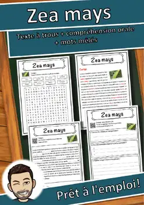
Zea mays – Fiche de lecture : texte à trous, compréhension orale et mots mêlés
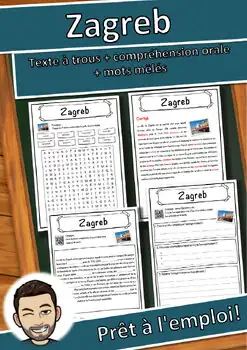
Zagreb – Fiche de lecture : texte à trous, compréhension orale et mots mêlés

Xylophon – Fiche de lecture : texte à trous, compréhension orale et mots mêlés
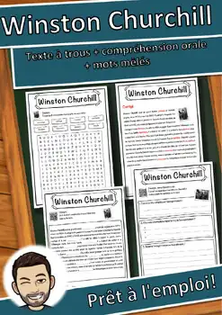
Winston Churchill – Fiche de lecture : texte à trous et compréhension orale

Wildkatze – Fiche de lecture : texte à trous, compréhension orale et mots mêlés

Wien – Fiche de lecture : texte à trous, compréhension orale et mots mêlés
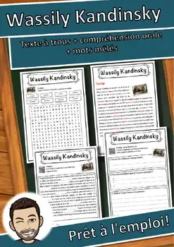
Wassily Kandinsky – Fiche de lecture : texte à trous et compréhension orale
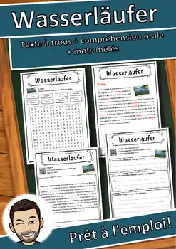
Wasserläufer – Fiche de lecture : texte à trous et compréhension orale
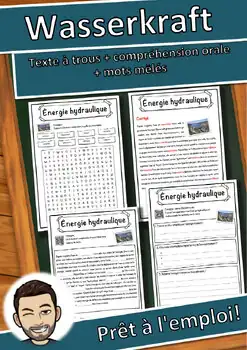
Wasserkraft – Fiche de lecture : texte à trous et compréhension orale
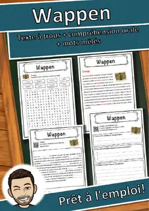
Wappen – Fiche de lecture : texte à trous, compréhension orale et mots mêlés
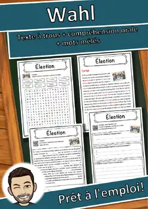
Wahl – Fiche de lecture : texte à trous, compréhension orale et mots mêlés
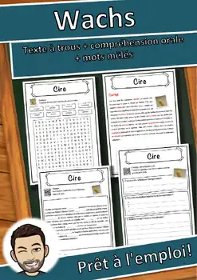
Wachs – Fiche de lecture : texte à trous, compréhension orale et mots mêlés
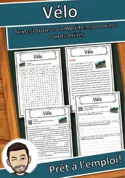
Vélo – Fiche de lecture : texte à trous, compréhension orale et mots mêlés
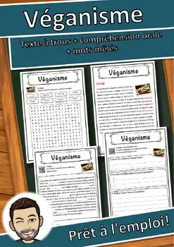
Véganisme – Fiche de lecture : texte à trous, compréhension orale et mots mêlés
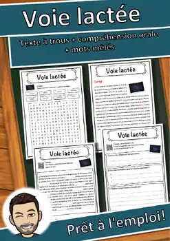
Voie lactée – Fiche de lecture : texte à trous et compréhension orale
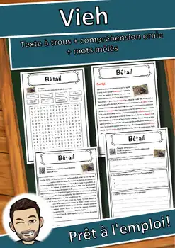
Vieh – Fiche de lecture : texte à trous, compréhension orale et mots mêlés
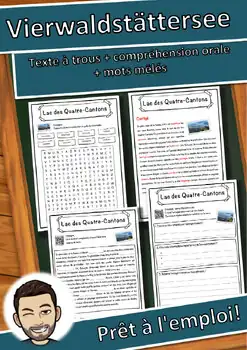
Vierwaldstättersee – Fiche de lecture : texte à trous et compréhension orale
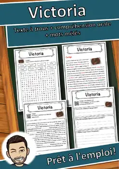
Victoria – Fiche de lecture : texte à trous, compréhension orale et mots mêlés
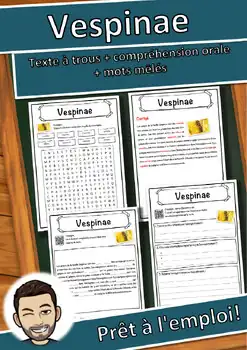
Vespinae – Fiche de lecture : texte à trous, compréhension orale et mots mêlés
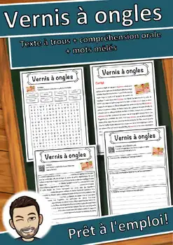
Vernis à ongles – Fiche de lecture : texte à trous et compréhension orale
Verfassung – Fiche de lecture : texte à trous, compréhension orale et mots mêlés
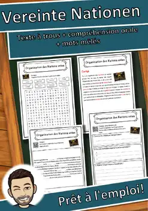
Vereinte Nationen – Fiche de lecture : texte à trous et compréhension orale
Varusschlacht – Fiche de lecture : texte à trous et compréhension orale
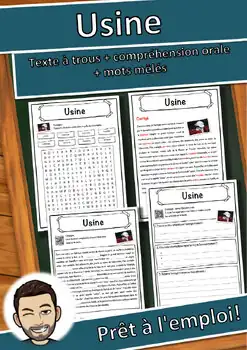
Usine – Fiche de lecture : texte à trous, compréhension orale et mots mêlés
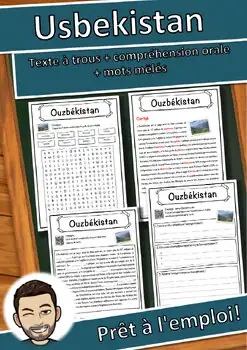
Usbekistan – Fiche de lecture : texte à trous, compréhension orale et mots mêlés
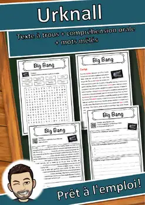
Urknall – Fiche de lecture : texte à trous, compréhension orale et mots mêlés
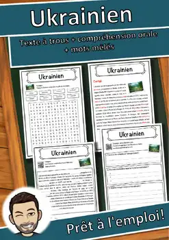
Ukrainien – Fiche de lecture : texte à trous, compréhension orale et mots mêlés
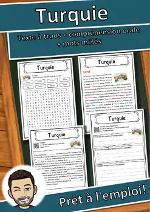
Turquie – Fiche de lecture : texte à trous, compréhension orale et mots mêlés
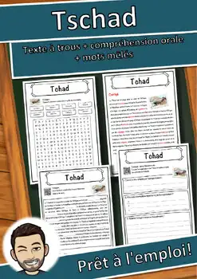
Tschad – Fiche de lecture : texte à trous, compréhension orale et mots mêlés
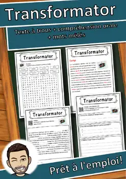
Transformator – Fiche de lecture : texte à trous et compréhension orale
Transatlantikliner – Fiche de lecture : texte à trous et compréhension orale
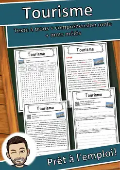
Tourisme – Fiche de lecture : texte à trous, compréhension orale et mots mêlés
Aucune ressource trouvée – essaie un autre mot ou un autre filtre.